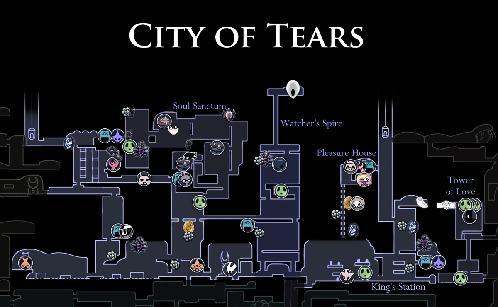
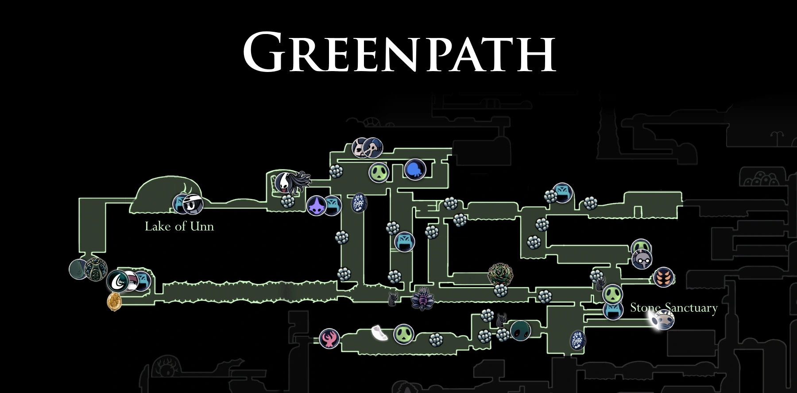
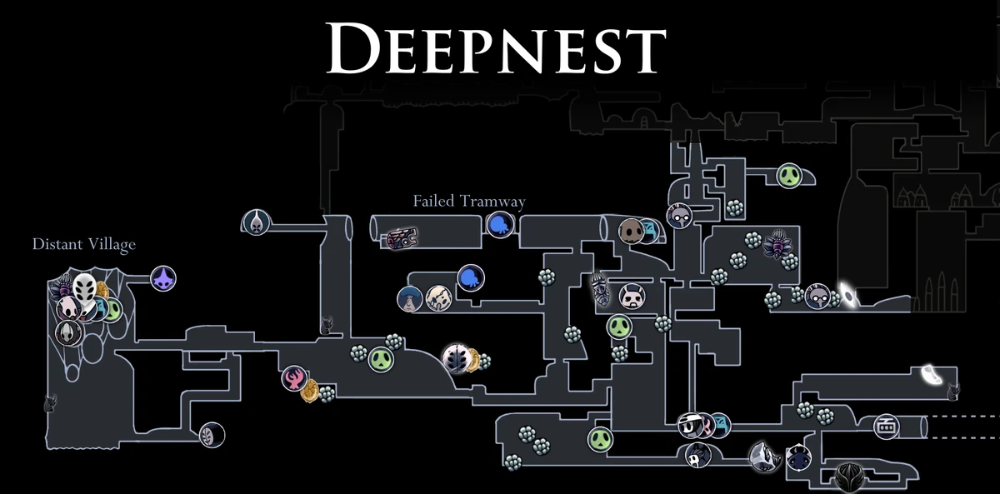
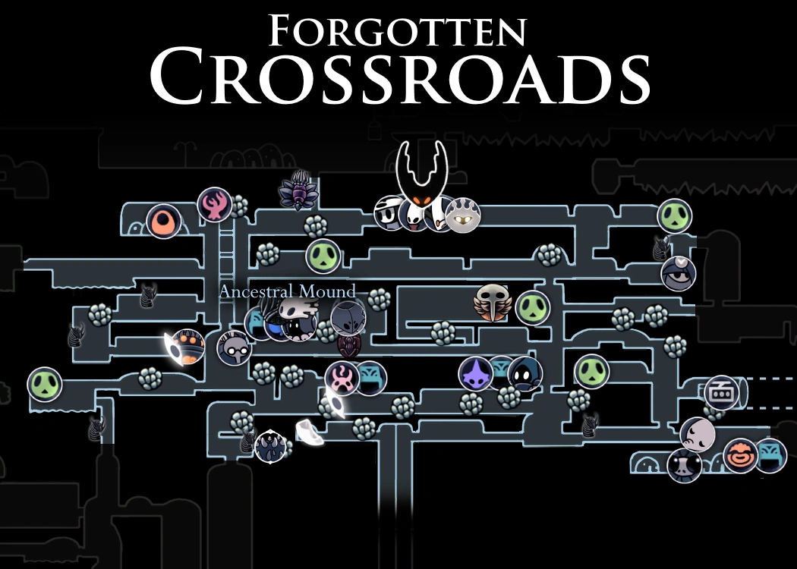

Geografía del Reino Caído

Ciudad de Lágrimas
Antiguo corazón de Hallownest: una ciudad monumental siempre bañada por lluvia. Sus canales y edificios góticos conservan ecos de la antigua civilización y las soñadoras.

Greenpath
Un paraje frondoso cercano a la entrada de Hallownest. Aquí la flora se entrelaza con rutas escondidas y enemigos más ligeros; es ideal para aprender el movimiento y encontrar amuletos iniciales.

Nidos Profundos
Zona oscura y claustrofóbica habitada por criaturas araña y trampas. Es una de las áreas más peligrosas del reino y es famosa por sus pasadizos laberínticos y batallas tensas.

Forgotten Crossroads
Las encrucijadas olvidadas: vastos túneles y enemigos básicos que sirven como eje para acceder a muchas otras regiones. Aquí se encuentran bancos y secretos esenciales.